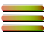

Menú
Lote
Carga
GPS
0.0
km/h
—
fecha
—
—
—
señal
0.0
ha/h
0.00
ha hechas
Min.
Max.
Cerrar
✕ Cerrar menú
Perfiles del vehículo
Idioma
›
Simulador
—
Coordenadas del simulador
Modo kiosco (pantalla completa)
Restablecer TODO
Ayuda
‹ Volver
Español
English
Português
Français
Deutsch
Italiano
Nederlands
Dansk
Norsk
Svenska
Suomalainen
Eesti
Latviski
Lietuvių
Polski
Čeština
Slovenčina
Magyar
Română
Hrvatski
Srpski
Русский
Yкраїнська
Türkçe
中国人
日本語
한국인
 Carga
Carga
Carga
Carga